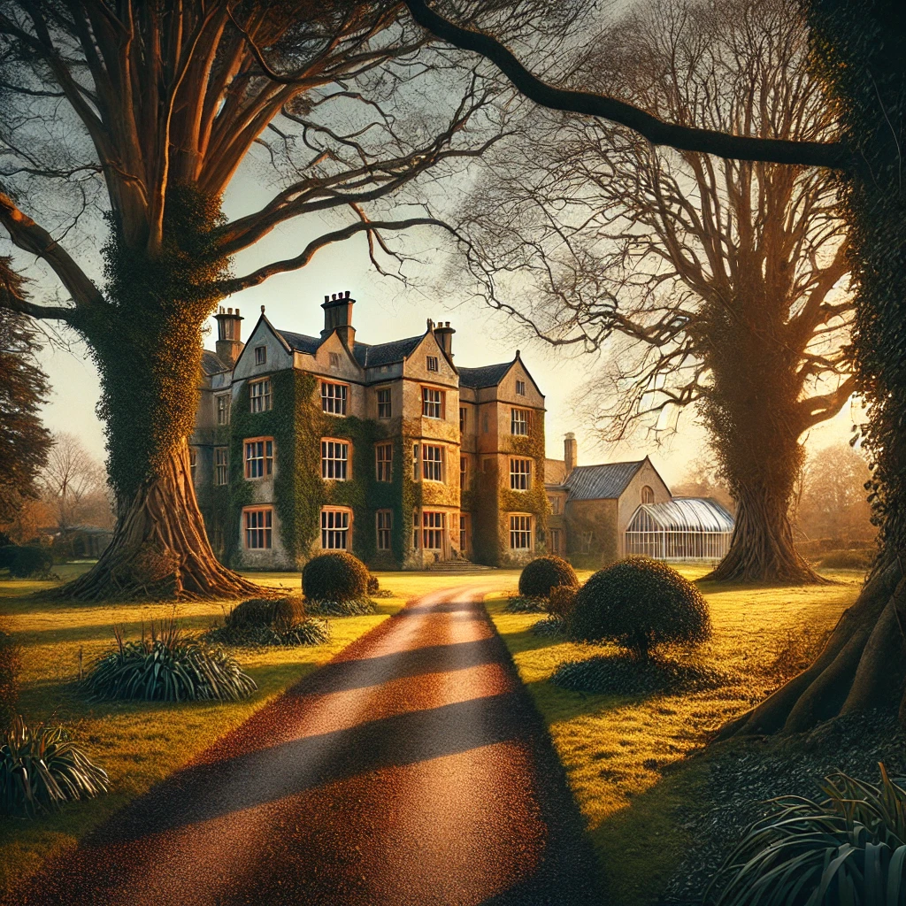

Hawthorne Grange
Country EstateGenteel but touched by the shadow of war — a household carrying on despite absence and injury
Overview
Hawthorne Grange is the Wentworth family estate in Tarryford, Wiltshire — the childhood home of Emma and Georgiana. Their father and their brother, a recovering war veteran, remain in residen
Overview
Hawthorne Grange is the Wentworth family estate in Tarryford, Wiltshire — the childhood home of Emma and Georgiana. Their father and their brother, a recovering war veteran, remain in residence.
<!-- UNVERIFIED: Father and brother names not yet established in canon — needs Keeper confirmation -->
Household Staff
- Mr_Bernard_Hathaway — Butler. Tall, silver-haired, impeccably proper. Trained in a wealthier house but chose loyalty to the Wentworths.
- Mr_Thomas_Wickes — Coachman & Stablemaster. Grew up in the village, knows every backroad in Hampshire.
- Miss_Alice_Wetherby — Lady’s Maid to Georgiana. Her mother served Georgiana’s mother in the same role.
- Miss_Edith_Talbot — Senior Housemaid. Iron-grey discipline, decades of service, remembers every scandal.
- Miss_Bridget_Clarke — Housemaid attending to Emma. Lively, freckled, a stark contrast to Alice.
- Mrs_Winifred_Fowler — Cook. Makes the best pies in Hampshire. Uses gossip as currency.
Campaign Role
Hawthorne Grange is the anchor of the Wentworth sisters’ lives before the campaign sweeps them into the Order’s world. The estate and its staff represent what Emma and Georgiana are fighting to protect — and what they may struggle to return to unchanged.
Relationships
- Part of Tarryford — The Wentworth family estate in Tarryford village
- Home of Emma Wentworth — Emma's family home
- Home of Georgiana Wentworth — Georgiana's family home